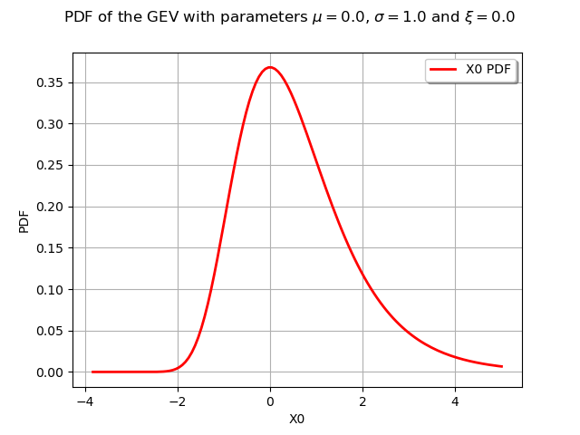
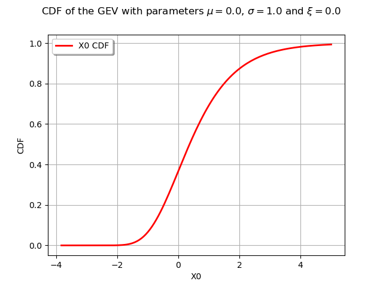

Note
Click here to download the full example code
Create an extreme value distribution¶
Abstract¶
In this example we show how to define extreme values distributions.
from __future__ import print_function
import openturns as ot
import openturns.viewer as otv
from matplotlib import pylab as plt
ot.Log.Show(ot.Log.NONE)
The generalized extreme value distribution (GEV)¶
The GeneralizedExtremeValue distribution is a family of continuous probability distributions that combine the Gumbel, Frechet and WeibullMax distribution, all extreme value distribution.
We define a generalized extreme value distribution with parameters , and
myDistribution = ot.GeneralizedExtremeValue(0.0, 1.0, 0.0)
The GeneralizedExtremeValue class acts as a proxy class. We can get the actual distribution (Weibull, Frechet or Gumbel) with the getActualDistribution method :
print(myDistribution.getActualDistribution())
Out:
Gumbel(beta = 1, gamma = 0)
For the chosen parameters it is a Gumbel distribution with parameters and .
We draw its PDF and CDF :
graphPDF = myDistribution.drawPDF()
graphPDF.setTitle(
r"PDF of the GEV with parameters $\mu = 0.0$, $\sigma = 1.0$ and $\xi = 0.0$ ")
view = otv.View(graphPDF)
graphCDF = myDistribution.drawCDF()
graphCDF.setTitle(
r"CDF of the GEV with parameters $\mu = 0.0$, $\sigma = 1.0$ and $\xi = 0.0$ ")
view = otv.View(graphCDF)
- 
- 
The Generalized Pareto Distribution (GPD)¶
In this paragraph we turn to the definition of a GeneralizedPareto distribution.
For instance we build a generalized Pareto distribution with parameters , and :
myGPD = ot.GeneralizedPareto(1.0, 0.0, 0.0)
We draw its PDF and CDF :
graphPDF = myGPD.drawPDF()
graphPDF.setTitle(
r"PDF of the GPD with parameters $\sigma = 1.0$, $\xi = 0.0$ and $u = 0.0$ ")
view = otv.View(graphPDF)
graphCDF = myGPD.drawCDF()
graphCDF.setTitle(
r"CDF of the GPD with parameters $\sigma = 1.0$, $\xi = 0.0$ and $u = 0.0$ ")
view = otv.View(graphCDF)
Display all figures
plt.show()
Total running time of the script: ( 0 minutes 0.439 seconds)